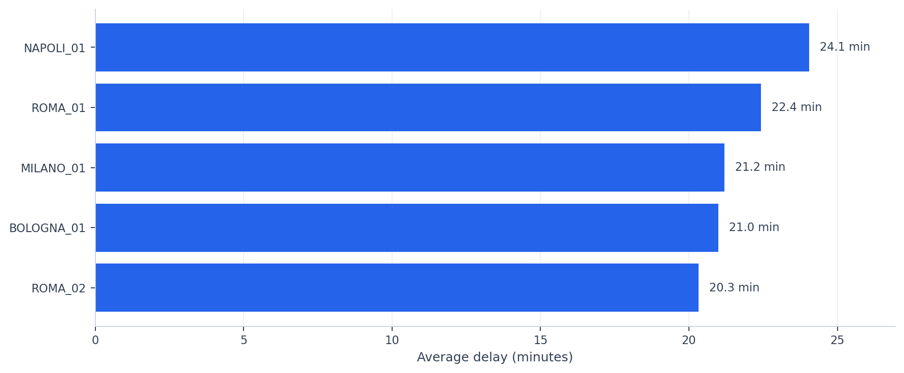
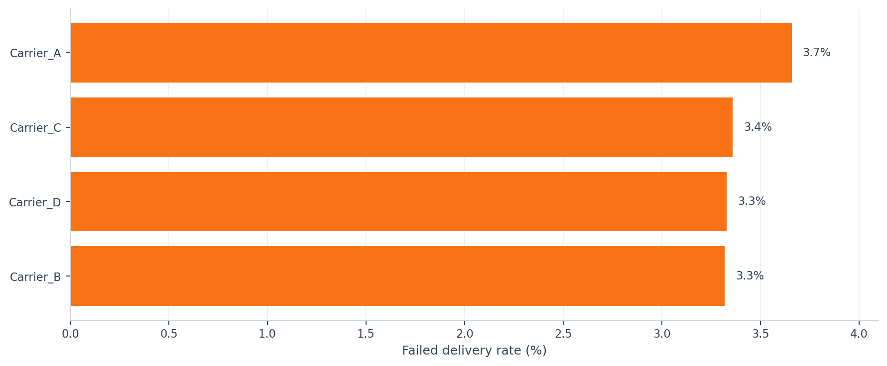
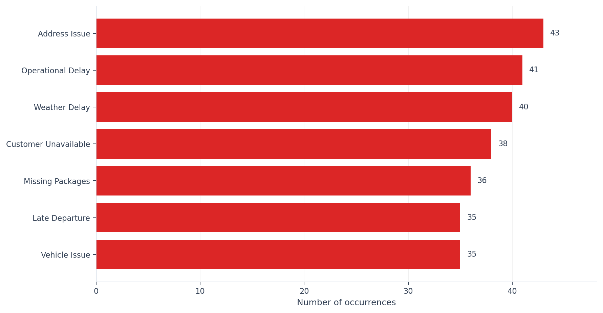

Operational dashboard generated through Python scripts from processed CSV files. The project simulates a data/operations pipeline to monitor shipments, logistics performance, delays, carriers and operational exceptions.
Comparison of stations by average operational delay. Useful for identifying areas that may require deeper investigation.

Comparison of carriers by failed package percentage. This metric is easier to read than success rate when carrier performance is very similar.

Distribution of the main operational exceptions, excluding records with no exception. The chart helps identify the most frequent issues impacting the process.
